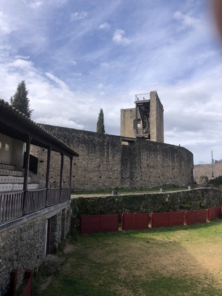

Tradición: Las capeas del 11 de agosto, símbolo de identidad local.

Gradas: De piedra original, testigos de generaciones.
Gradas: De piedra original, testigos de generaciones.
🪧 Reto: Completa el cartel de la fiesta
1. ¿En qué fecha se celebran las capeas?
2. ¿Qué actividad acompaña las capeas?
3. ¿Qué bebida se reparte durante la celebración?
Fragmento del Mensaje: en
QR en el pueblo: PLAZA-1523
Dato Curioso: La plaza se construyó aprovechando el patio de armas del castillo en el siglo XVII.